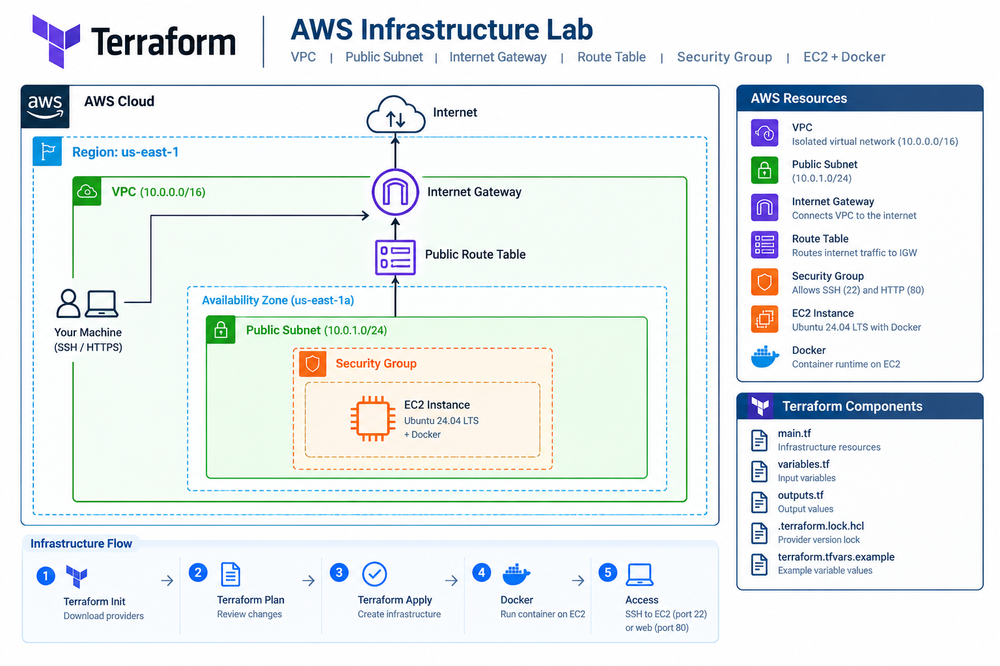
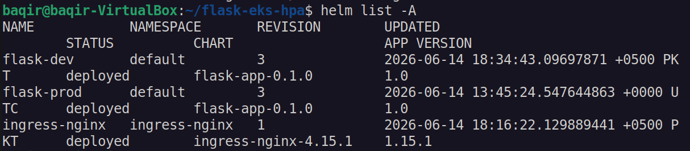
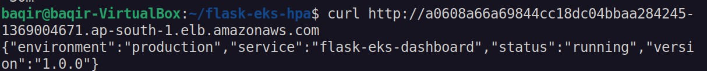
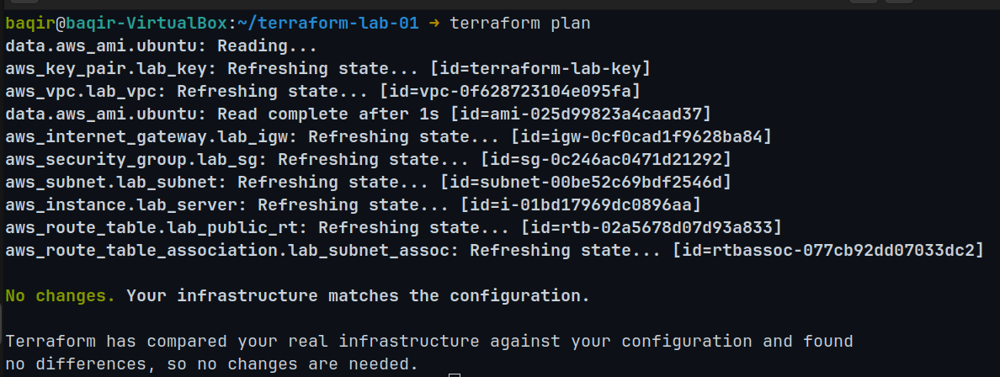
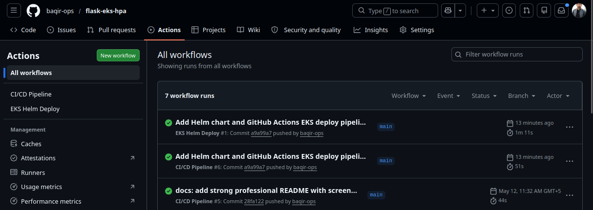

MS Information Technology
Ghazi University
2018 — 2020AWS • DEVOPS • CLOUD AUTOMATION
I'm Muhammad Baqir Nawaz, a Cloud / DevOps Engineer focused on AWS, Linux, Docker, Kubernetes, Terraform and CI/CD. I build hands-on infrastructure projects, automate deployments, and practice troubleshooting real-world cloud scenarios.
whoami
01 / ABOUT
I'm an Electronics Engineering graduate building my career in Cloud and DevOps engineering through hands-on infrastructure and automation projects. My approach is practical: understand the architecture, build it, break it, troubleshoot it, automate it, and document what I learned.
02 / EDUCATION
Ghazi University
2018 — 2020The Islamia University of Bahawalpur
2013 — 201703 / EXPERIENCE
Building and documenting hands-on AWS, Kubernetes, Terraform, Docker and CI/CD projects, with source code maintained on GitHub.
Maintained inventory and operational records, coordinated with vendors and production teams, and resolved supply and inventory issues under time-sensitive conditions.
04 / TOOLBOX
EC2 · VPC · IAM · S3 · RDS · ECS · ECR · EKS · ALB · CloudWatch
Docker · Docker Compose · Images · Volumes · Networking · Multi-stage Builds · Non-root Containers
Pods · Deployments · Services · Ingress · HPA · Helm · EKS · Health Probes · Troubleshooting
Terraform · VPC · EC2 · IAM · Variables · Outputs · Data Sources · IaC
GitHub Actions · GitFlow · Docker Hub · Self-hosted Runners · Automated Deployments
Argo CD · GitOps · Prometheus · Grafana · Alertmanager · Metrics · Monitoring
05 / PROJECTS

Provisioned AWS VPC, EKS, IAM and ECR with Terraform. Built GitHub Actions authentication through OIDC and promoted immutable SHA-tagged images across environments. Configured Argo CD for automated sync, self-healing and pruning, with Prometheus, Grafana and Alertmanager for observability.
View project ↗
Evolved a containerized Flask application from local Minikube to Amazon EKS using Helm, ECR, NGINX Ingress, health probes and Kubernetes HPA. Automated image builds, ECR publishing and Helm deployments with GitHub Actions across development and production environments.
Result: Demonstrated HPA scaling from 2–6 pods in development and 3–10 pods in production, with commit-SHA image tagging and Helm-based rollback.
View project ↗
Deployed a containerized Flask application to ECS Fargate behind an Application Load Balancer. Automated Docker image builds, ECR publishing and deployment with GitHub Actions, with health checks and CloudWatch logging.
View project ↗
Provisioned an AWS VPC, public subnet, Internet Gateway, route table, security group, key pair and Ubuntu 24.04 EC2 instance with Docker using Terraform variables, outputs, providers and data sources. Verified the provisioned server through SSH and Docker.
View project ↗
Implemented a Dev, Staging and Production GitFlow workflow with automated testing, Docker builds, registry publishing and environment-specific deployments. Production releases use GitHub Environments with manual approval and a self-hosted Ubuntu runner.
View project ↗06 / JOURNEY
Built the fundamentals needed to operate and troubleshoot cloud workloads.
Moved from containers to orchestration, scaling, service exposure and automated deployments.
Built versioned, repeatable infrastructure for AWS networking, security and EC2 workloads using Terraform.
Building monitoring and observability skills for metrics, dashboards and alerting.
07 / CONTACT
I'm open to junior DevOps, Cloud Engineer, Cloud Support and AWS-focused opportunities.